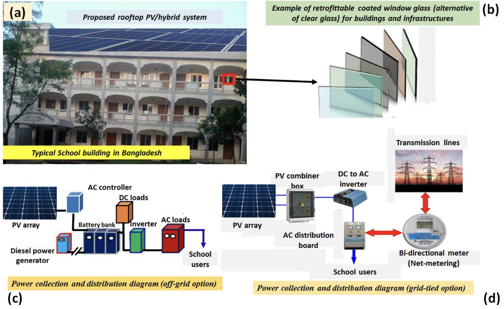
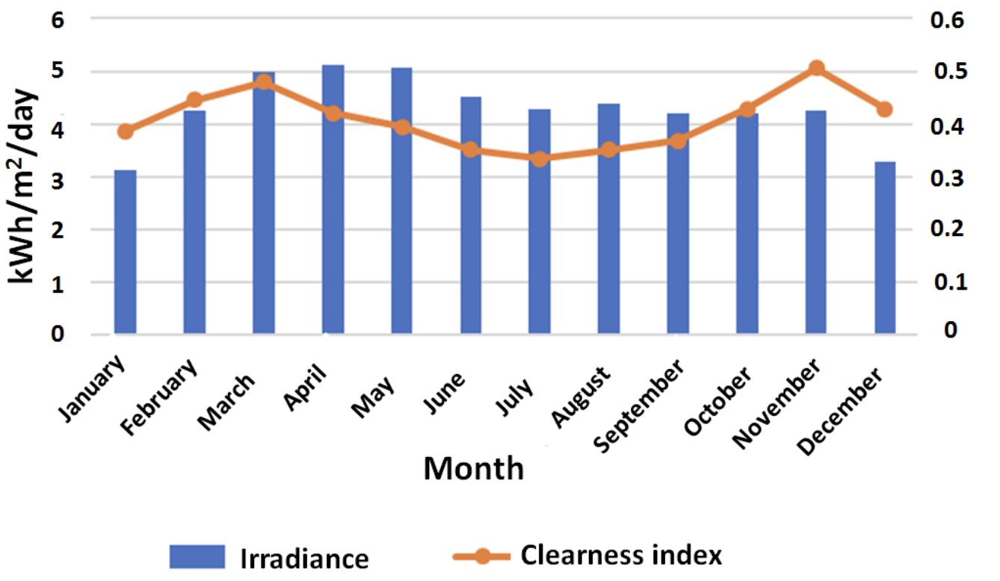
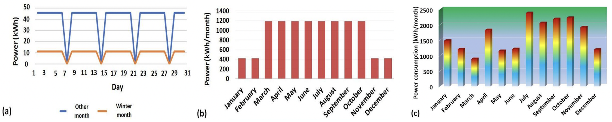
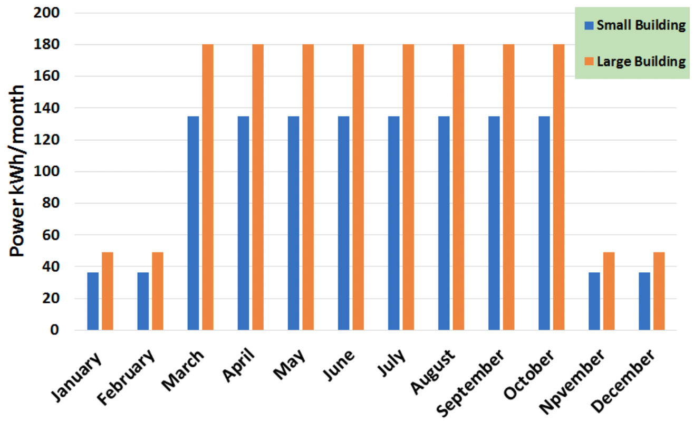
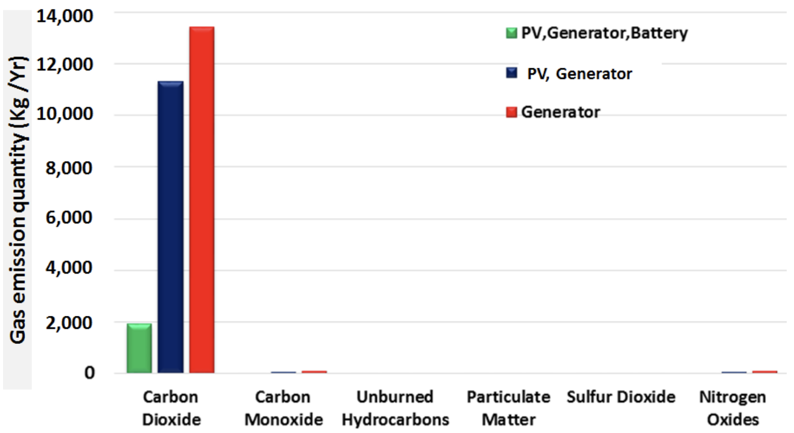
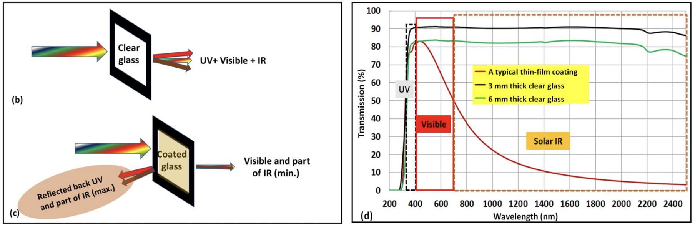
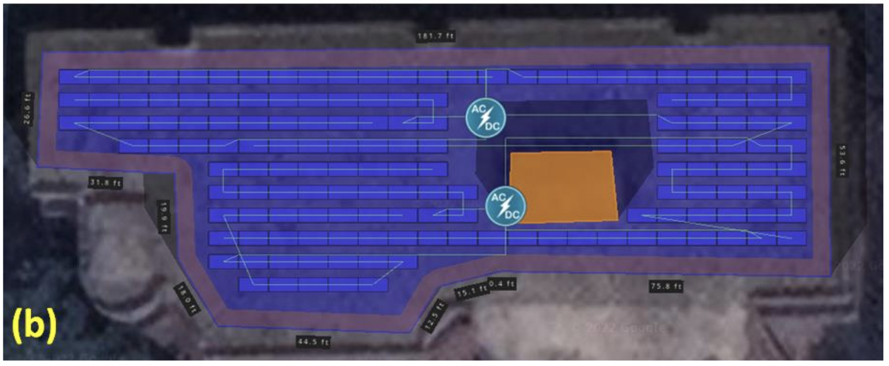
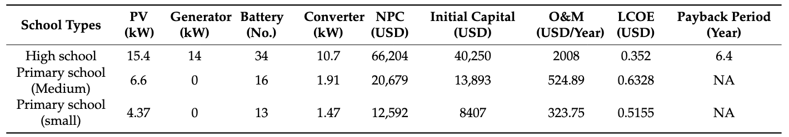

Hybrid PV and Low-E Glass Retrofit for Sustainable Schools in Bangladesh
Overview
This project evaluates the techno-economic and environmental impact of deploying rooftop photovoltaic (PV) systems and Low-E coated window retrofitting across schools in Bangladesh. Simulations were conducted using HOMER Pro and HelioScope on representative schools to assess performance, payback, and carbon reductions.
Problem Statement & Objectives
Most educational institutions in Bangladesh are grid-dependent, with frequent power outages and limited energy efficiency standards. The absence of thermal insulation results in significant cooling energy demand, often met with diesel generators. The objective of this project is to demonstrate a dual retrofitting strategy—solar PV integration and Low-E coated window replacement—to simultaneously reduce grid dependency, peak demand, operational costs, and carbon emissions.
Solar Potential & Energy Profiles
With an average solar irradiance of 4.5–5.5 kWh/m²/day across most regions, Bangladesh holds immense potential for rooftop PV adoption. Simulations using NASA’s solar datasets and HelioScope modeling highlight ideal panel tilt, spacing, and monthly clearness indices critical for planning. The energy profile of schools was established based on measured load from two school types—primary and high school—revealing seasonal variation and cooling-dominated demand.
  Environmental Impact
Annual emission modeling shows the hybrid (PV + grid) scenario results in 70–75% less CO₂ emissions than a diesel-only setup. This translates to nearly 18 tons of CO₂ reduction per school per year. Hybrid systems using net-metering further lower operational carbon footprints, contributing directly to Bangladesh’s NDC goals under the Paris Agreement.
Low-E Glass Performance
Low-E windows have a microscopically thin metallic layer that blocks infrared radiation while permitting visible light. This retrofit results in reduced solar heat gain and enhances thermal comfort by lowering indoor temperatures by 2–3°C. Simulation-based daylight analysis also confirmed that daylight quality is preserved, minimizing the need for artificial lighting during school hours.
Rooftop PV Layout
The Udayan School layout optimized rooftop real estate to support a 12 kW PV system. HelioScope modeling validated daily and seasonal solar availability, inverter sizing, shading effects, and system losses. The simulation demonstrated a capacity factor of 17–20% and a solar fraction exceeding 50% of the annual load.
Financial Summary
Economic analysis shows that a combined PV + Low-E investment of ~$20,000 per school has a return on investment (ROI) within 6.4 years for secondary schools and 7.8 years for primary schools. Low-E installations account for approximately 20–25% of the capital cost but yield persistent savings in air conditioning energy, especially in pre-summer and monsoon seasons. Diesel cost avoidance, net-metering benefits, and reduced cooling load drive favorable payback curves.
Conclusion & Impact
- 28% average electricity savings due to PV deployment
- 14% reduction in cooling load from Low-E glass retrofitting
- 18 tons/year CO₂ avoided per school building
- Thermal comfort improved by 2–3°C (reduced HVAC demand)
- ROI achieved within 6.5 years under typical financial assumptions
8. Related Publication
Title: Rooftop PV or Hybrid Systems and Retrofitted Low-E Coated Windows for Energywise and Self-Sustainable School Buildings in Bangladesh
Journal: MDPI Solar (2024)
DOI: 10.3390/solar2040032
Authors: Kazi Zehad Mostofa, Mohammad Aminul Islam, et al.